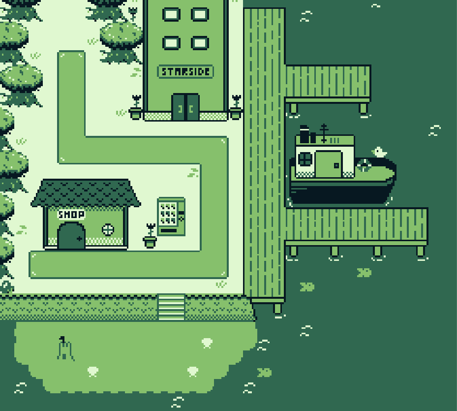
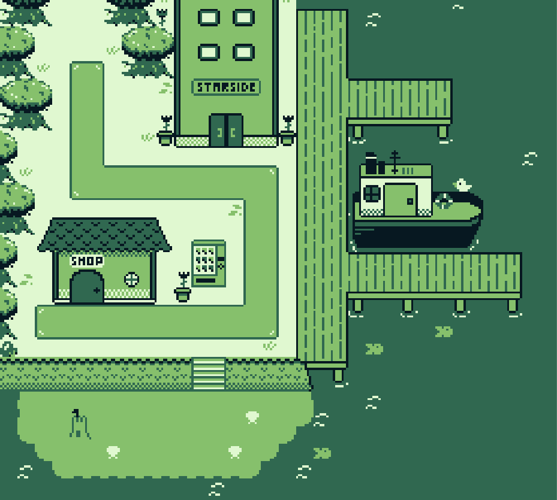

Borbo's Quest
Borbo’s Quest is an adventure/puzzle game for the original GameBoy which I independently created and developed, with the help of a friend who composed the music. The game uses simple puzzle mechanics, alongside seamless tutorialization through the use of level design to create an intuitive gameplay experience. The game uses mechanics which gradually expand and overlap to create a sense of progress for the player, culminating in a series of satisfying challenges that reward the player for their knowledge of the game’s systems.


This system required intricate and thoughtful level design, with each individual level of the game undergoing a series of iterations, from a sketch in my journal, all the way to implementation. I used rapid iteration to build upon ideas that worked, and ditched any that didn’t. Working alone on a puzzle game required me to be able to take-on the role of the player, and intuit how one may progress through any given level or obstacle. I learned quickly, through observation of playtesters, how to perceive the world through a player’s eyes, and grew to understand common behaviours and intuitions.
 

I would consider the game to be a success, as it has been positively received across multiple communities and demographics. On itch.io, where the game was originally published, Borbo’s Quest has been played over 3000 times. Following its success on itch.io, the game was licensed to the games website CoolMath Games, where it has been repeatedly featured in the “Trending” and “Popular” sections of the site, and received a 4/5 average review score from over 500 submitted reviews.
The game can be played for free online here: